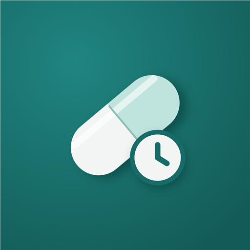

Kliniko Privacy Policy
Effective date: 12 October 2026
Last updated: 15 October 2026
1. Introduction
Kliniko ("Kliniko", "we", "our", or "us") is a medication management application designed to help users organize medicines, manage medication reminders, review dose history, and maintain personal health-related records.
This Privacy Policy explains how Kliniko handles information when you use the application, including information stored on your device and information processed by third-party services when you choose to use features that require them.
We aim to minimize unnecessary collection of personal information and to keep medication and health-related data under your control on your device wherever the application architecture permits.
By using Kliniko, you acknowledge that you have read this policy. Where applicable law requires consent for a particular processing activity, we will seek that consent separately.
2. Information We Handle
The information handled by Kliniko depends on which features you use.
2.1 Account information
Kliniko uses Firebase Authentication to support account registration, sign-in, and authentication-related account operations. The current version of Kliniko offers email-and-password sign-in only. It does not offer Google, Apple, or any other third-party sign-in. Firebase Authentication processes information such as:
- Email address and authentication identifiers (user ID).
- The display name you enter, which is stored with your Firebase Authentication profile and also cached on the device in encrypted form.
- Account status and information needed to maintain or verify your authenticated session.
- Firebase App Check attestation information used to confirm that requests come from a genuine installation of the app.
Your password, where applicable, is managed through Firebase Authentication. Kliniko does not store your plaintext password in its local medication database.
2.2 Medication and health information
Kliniko is designed to store medication and health-related information locally on your device. Depending on the features you use, this may include:
- Medication names, dosage details, schedules, and reminder settings.
- Dose history and recorded medication actions.
- Appointments and prescription-related information.
- Personal health records and related notes.
- Other information you choose to enter into the application.
This information may be sensitive. You should protect access to your device and avoid entering information that you do not want stored in the app.
The current architecture uses account-scoped local Isar databases on your device. Each signed-in account gets its own local database file. Sensitive local fields and prescription photos are encrypted at rest using a per-account AES-256-GCM key that Kliniko stores in your device's secure key storage. Release builds also block screenshots of the app and disable Android auto-backup of app data. These measures are designed to help separate and protect local user data, but no security measure can guarantee that data on a lost, compromised, or rooted device is unrecoverable by an attacker.
2.3 Prescription images and scanned text
If you use medication scanning, you may select or capture a prescription or medicine image. The image is processed on your device using on-device text recognition, and the recognized text is shown to you for review and correction before anything else happens. Temporary working copies of the image are created in the app's private temporary storage during recognition and are deleted after processing.
Image selection, local text recognition, and the optional cloud AI step are distinct activities. Text recognition runs entirely on your device. The optional AI step is separate: after you consent and choose to run it, the app sends only the recognized text you reviewed, together with short text fragments derived from that text. The image itself is not uploaded to the AI service.
Nothing is sent to the AI service unless you review the recognized text and explicitly choose to use the AI step. If you decline, or if the AI step is unavailable, you can continue by entering or editing the medicine details manually.
2.4 Device and application information
Kliniko and its supporting services may process technical information needed for authentication, notification delivery, security, troubleshooting, and service operation. The precise information collected depends on the app version, operating system, Firebase configuration, and any enabled integrations.
The current application does not include advertising SDKs, analytics SDKs, or crash-reporting SDKs of its own. If those integrations are ever added, this policy will be updated before release to describe them.
Kliniko does include Google-provided libraries: Firebase Authentication, Firebase App Check, Firebase AI Logic, and the on-device ML Kit text recognition library. Like most Google SDKs, these may transmit limited technical and diagnostic information to Google as part of normal service operation, such as app and device identifiers, API usage, and error information. Kliniko does not control the content of that service-level telemetry; Google's processing is governed by the applicable Google and Firebase terms and privacy documentation.
2.5 Device permissions and background operation
Kliniko requests Android permissions only for the features it provides:
- Notifications — to deliver the medication reminders you schedule. Optional. Without it, medicines are still saved locally, but the app reports that reminders are not active.
- Alarms and reminders (exact alarms) — optional, and requested only if you enable the alarm-style reminder. Standard reminders use inexact scheduling and work without this permission.
- Camera — to photograph a medicine label, package, or barcode. Optional; you can enter medicine details manually instead.
- Biometric or device-credential authentication — optional app lock. Verification is performed by your device's operating system; Kliniko does not receive or store your biometric data, fingerprint templates, or device passcode.
- Vibration and restart-after-reboot — used for the alarm ring pattern and to restore scheduled reminders after your device restarts.
To keep future reminders scheduled, Kliniko registers a periodic background task with Android's WorkManager. That task re-establishes the app's sign-in session and refreshes the local notification schedules. It does not transmit your medication or health records.
3. Where Information Is Stored
3.1 Local storage
Medication and health-related records are intended to remain in the app's local database on your device. The current architecture uses Isar as its local data store.
Kliniko's local-only data architecture does not mean that every feature is offline. Authentication and optional online services may require an internet connection.
Information stored locally may be lost if you uninstall the application, clear its data, lose your device, or experience storage corruption. Unless a particular export or backup feature is provided, you should not assume that your records can be recovered from another device.
3.2 Firebase Authentication
Firebase Authentication is used to authenticate users. Authentication information is processed by Google Firebase under the applicable service terms and privacy documentation. Review Google's Privacy Policy and the terms that apply to Firebase services for details about Google's processing, security, and retention.
The current design does not use Firestore or Firebase Storage as the primary source of truth for medication and health records. This does not guarantee that records uploaded by an earlier app version have been deleted from cloud services.
3.3 No automatic cloud synchronization of local records
The current architecture is designed around local storage rather than ongoing synchronization of medication records to Firestore or Firebase Storage.
If an earlier version of Kliniko stored information in cloud services, that historical information may remain until it is separately deleted. Deleting local data does not, by itself, delete those historical cloud records.
4. Optional AI-Assisted Medication Scanning
Kliniko may offer optional AI-assisted medication scanning through Firebase AI Logic and a Gemini model. If you choose to use this feature:
- Information necessary to process the request may be sent to Google's AI services through Firebase AI Logic.
- When you use the optional AI step, the app sends the text it has already recognized from the image using on-device recognition, along with short text candidates derived from that recognition. The prescription photo itself is not uploaded to the AI service.
- The service processes the information to generate a response, such as a proposed interpretation of medication details.
- AI-generated results may be incomplete, inaccurate, ambiguous, or outdated.
Do not submit unrelated personal information or information about another person unless you have the necessary authority and the feature requires it.
AI scanning is optional. You can choose not to use it and instead enter or review medication information manually, where manual entry is available. The app asks for your consent before the first AI request and remembers your answer; you can turn the AI step off, or reset that consent so that you are asked again, in the app's Settings under "Privacy & AI".
Google's processing of information submitted through its services is also subject to the applicable Google and Firebase terms and privacy documentation. We do not promise that information sent to a third-party AI service is processed exclusively on your device.
The AI step uses Firebase AI Logic and a Gemini model. Google's handling of the text you submit is subject to the applicable Google and Firebase terms and privacy documentation.
5. Prescription Photos and Telegram
Kliniko may provide a feature that allows you to send a prescription image and associated information to Telegram.
Where this feature is enabled, the intended workflow requires you to review the information and explicitly choose to send it before the transmission takes place. A preview or review screen is not, by itself, permission to transmit information.
If you confirm the send action:
- The selected image and associated message content may be transmitted through the configured Telegram integration.
- The integration may process the request through a server-side proxy before delivering it to Telegram.
- Telegram and the recipient account or chat may receive or retain the information according to their own systems, settings, and policies.
Prescription images can contain sensitive medical and personal information. Review the destination and contents carefully before sending. Do not send another person's prescription without appropriate authority.
Telegram transmission is a separate activity from local storage and optional AI scanning. Consent to one activity should not be treated as consent to another.
The Telegram feature is optional and only works when a Telegram destination has been configured for the app. Transmission uses an HTTPS connection to a Kliniko-operated relay, which then delivers the prescription to the configured Telegram destination. If no destination is configured, the app does not offer the send action.
6. Medication Reminders and Notifications
Kliniko may schedule local notifications to remind you about medication times and related actions. To provide this functionality, the application may store reminder settings and schedule notification requests through the operating system.
Notification delivery depends on device permissions, operating-system behavior, power management, device state, and other technical conditions. Notifications may be delayed, suppressed, missed, or canceled.
Kliniko does not guarantee that every reminder will be delivered or that you will take a medication at the scheduled time. You remain responsible for following the instructions provided by your healthcare professional.
7. How Information Is Used
Depending on the feature, Kliniko may process information to:
- Authenticate your account.
- Store and display the medication and health information you enter.
- Schedule and manage medication reminders.
- Record and display dose history.
- Provide medication scanning and interpretation when you choose to use optional AI.
- Support prescription transmission when you explicitly confirm a supported Telegram send action.
- Maintain application security and respond to technical failures.
- Perform account deletion and local data cleanup.
- Comply with applicable legal obligations.
We do not state that local medication records are used for advertising or sold to advertisers. Any future analytics, advertising, or additional data-sharing functionality should be reflected accurately in an updated policy before release.
8. Sharing and Disclosure
Kliniko does not require cloud synchronization of local medication records as its primary data architecture. However, information may be shared with a service when you use a feature that requires it. Relevant service providers may include:
- Google Firebase Authentication, for account authentication.
- Firebase AI Logic and Gemini, when you choose optional cloud AI scanning.
- OpenFDA (api.fda.gov), when you use the "Check OpenFDA reference" button on the medicine form, which sends the medicine name you typed, or when you scan a barcode, which sends the scanned barcode value, to query the U.S. Food and Drug Administration's public OpenFDA drug-label API. Only that value is sent; no account, health-record, or dose-history information is included in the request.
- Telegram, when you explicitly confirm sending a prescription image through an enabled integration.
- Infrastructure or technical service providers, if used to operate an enabled feature.
We may also disclose information where required by applicable law or where reasonably necessary to protect the security and integrity of the application, subject to applicable legal requirements.
9. Retention and Deletion
9.1 Local data
Local medication and health data may remain on your device until you delete it, clear the app's data, uninstall the application, or use a feature that removes the relevant records.
Kliniko's account-deletion workflow removes the signed-in account's local data first, including the account-scoped local database, prescription photos, account-specific preferences, and the local encryption key. If a local cleanup step fails, the app reports which step failed and does not delete the Firebase sign-in account.
9.2 Firebase Authentication account deletion
After local cleanup succeeds, the app attempts to delete the Firebase Authentication account. Authentication deletion may fail, for example, if reauthentication is required or the network is unavailable.
Consequently, local data cleanup and Firebase account deletion are separate operations. Successful local cleanup does not guarantee successful deletion of the authentication account.
9.3 Historical cloud records
Older records stored in Firestore, Firebase Storage, or other cloud services by earlier app versions may remain after account deletion. The current local-only deletion workflow does not automatically guarantee their removal.
If historical cloud data exists, it may require a separate deletion process. Contact klinikoapp@gmail.com for assistance or questions about applicable deletion rights.
9.4 Third-party retention
Information submitted to Google, Telegram, or another third-party service may be subject to that provider's retention, deletion, security, and legal requirements. Deleting Kliniko or your Firebase Authentication account does not necessarily remove information already received by those services.
9.5 Legacy unscoped local database
Some devices may contain a legacy local database that was created before account-scoped storage existed. Because its records cannot be reliably attributed to a specific signed-in account, Kliniko intentionally does not open, import, or delete that legacy database. It is left untouched during normal use and during account deletion.
10. Security
We use the application's available technical safeguards to help protect information, including account-scoped local storage and encryption.
No application, device, database, or transmission method can be guaranteed completely secure. Your device security, operating-system configuration, account credentials, and permissions may affect the protection of your information.
Do not share your password, unlock credentials, or other security-sensitive information with anyone.
11. Your Privacy Rights
Depending on your location and applicable law, you may have rights to:
- Request access to personal information about you.
- Request correction of inaccurate information.
- Request deletion or restriction of certain processing.
- Object to certain processing activities.
- Withdraw consent where processing relies on consent.
- Request a copy of eligible information in a portable format.
- Lodge a complaint with an appropriate privacy or data protection authority.
These rights may be subject to legal exceptions and may apply differently to information held locally, information held by Firebase, and information already submitted to third parties.
To make a privacy request, contact klinikoapp@gmail.com. We may need to verify your identity before acting on a request.
12. Children's Privacy
Kliniko is not intended for use by children who are not legally permitted to use the service or provide any required consent in their jurisdiction.
If you are a parent or legal guardian and believe a child has provided personal information through a feature that processes it, contact klinikoapp@gmail.com so we can review the situation and take appropriate action where required by law.
Kliniko is not directed to children, and the minimum age for using the app is determined by the app store's terms and the laws of your jurisdiction.
13. International Users and Transfers
Kliniko may be used in countries with different privacy and data protection laws. Third-party services used by the app may process information in locations outside your country of residence.
Where required by law, appropriate safeguards or other lawful grounds must apply to international transfers of personal information.
Nothing in this policy is intended to remove privacy rights that cannot lawfully be excluded under the law applicable to you.
14. Changes to This Policy
We may update this Privacy Policy when the application, its service providers, its data practices, or applicable legal requirements change.
The revised policy will display an updated effective date. Where required by applicable law, we will provide notice or obtain consent before implementing a material change.
15. Contact Us
For questions, privacy requests, or concerns about this policy, contact:
-
Kliniko Privacy Contact
Email: klinikoapp@gmail.com - Operator: Kliniko
- Postal business address: not published at this time.
- Website: this privacy policy and the account and data deletion instructions.
Please do not include unnecessary medical details when contacting us about a privacy request.